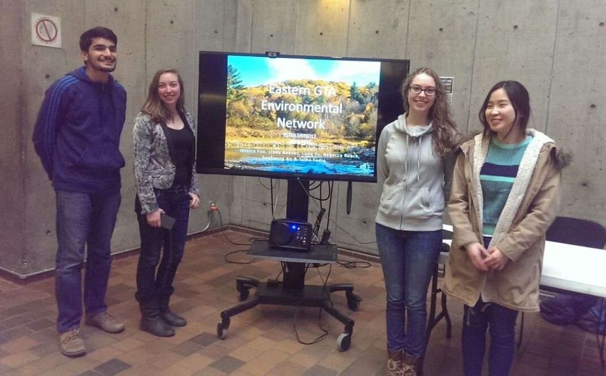

Eastern GTA Environmental Network Capstone
While auditing an environmental capstone class at the University of Toronto, I was invited to join the team to work on a networking project. The aim of the project was to lay the ground work for a site that would identify all of the research papers published in the Highland Creek area of Scarborough, provide links to those papers, and pin point where the research was conducted on a map of the area. The main goal was to bring awareness to the natural resource on campus, allow researchers to view all the available data in one place, and to spark new research ideas on the areas that had not yet been studied in the area.